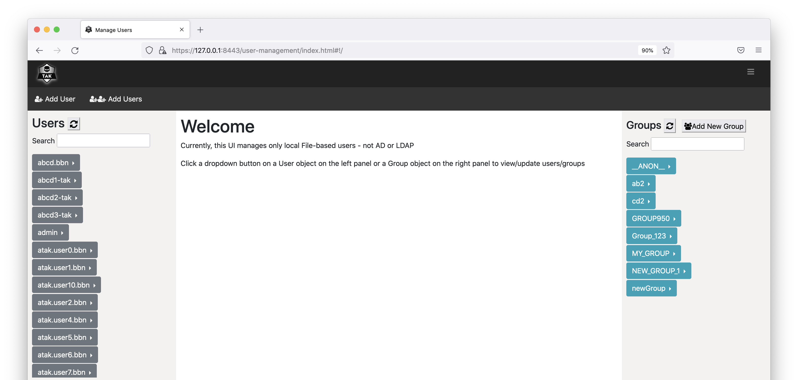
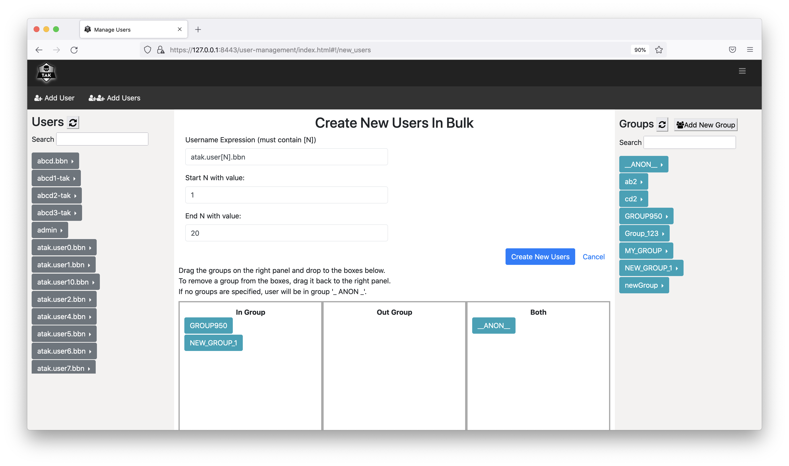

User Management UI
Overview
The User Management UI provides an intuitive drag-and-drop mechanisms for managing TAK user accounts. The tool is integrated within TAK Server and can be accessed from the TAK main menu, under Administrative >> Manage Users. Users need to have an admin role to access the tool. Currently the User Management UI supports only file-based users and not LDAP/AD users. The tool allows TAK administrators to create, manage, inspect and delete TAK user accounts. More specifically, the tool allows TAK administrators to:
- View, filter and search for existing user accounts and groups.
- View a list of users in each group.
- Change password for each user account.
- View and update groups (IN group, OUT group and both) for each user account.
- Delete user accounts.
- Create a new user account with a specified password and groups. Password complexity is checked to confirm compliance.
- Create new user accounts in bulk with username following a pattern. System uses password generation mechanism to create passwords that meet TAK password complexity requirements. System produces output file with user/password combos as a one-time downloadable item, after which system forgets the un-hashed passwords.
- Create new groups.
Usage
The below figure shows the main page of the User Management UI. The left panel lists all user accounts, which can be filtered using the Search box on the top. The right panel lists all existing groups, which can be filtered using the Search box on the top.

To change user’s password, click on the arrow right next to the username and select "Change password".

To view/edit groups for a user account, click on the arrow right next to the username and select "View/Edit groups". You can drag the groups from the right panel and drop to one of the three boxes in the middle panel. Click on “Reset” button to bring the UI back to showing the current groups of the user. Click on “Update” button to update the groups of the user.

To delete an account, click on the arrow right next to the username and select "Delete User". You will be prompted to either confirm or cancel the action.

To list all users in a group, click on the arrow right next to the group name and click on "List users".

To create a new user, click on "Add User" on the menu bar.

To create new users in bulk, click on "Add Users" on the menu bar.